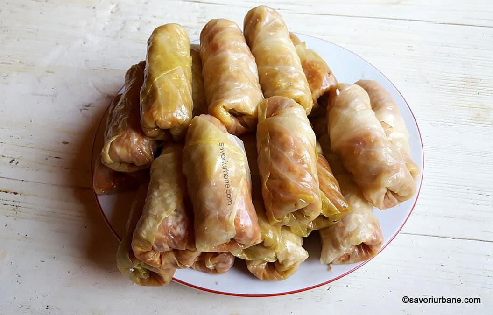

Sarmale recipe

Description:
"Sarmale" also known as Cabbage Rolls is one of the most iconic traditional Romanian dishes, being present on every family's table regardless of the event.
They look pretty standard, yet only the most experienced cooks and chefs can make them taste so good, you just can't stop eating them. Such a cook is my grandmother who made them so tasty and so estetic that I could eat a dozen and wouldn't be full.
Ingredients:
- Vegetable oil
- Onion
- Long grain rice
- Ground pork
- Fresh parsley & drill
- Salt & pepper
- Bacon
- Tomato juice
Steps:
- Prepare the filling: Heat the oil in a skillet over medium-high.
Saute the onions until translucent, then add the rice and toast for 1 minute.
Add the pork, salt, pepper, parsley, dill, and the onion mixture to a large bowl and mix well.
Use salt sparingly - the cabbage leaves are brined.
- Roll the filling: Remove the cabbage leaves from the brine.
You can soak them in water beforehand to draw out some of the salt.
Cut each leaf in half and fill the piece with a few tbsp of the meat mixture and roll.
Repeat until all the filling has been used.
-
Assemble the rolls: Chop up the remaining cabbage leaves and add them to a large pot or deep roasting dish with a lid.
Arrange all the rolls over the chopped cabbage and disperse the bacon evenly among the rolls.
Pour the tomato juice over the rolls and top up with some water, if needed, to ensure the rolls are covered with liquid.
-
Bake the rolls: Cover the pot with a lid or foil.
Bake at 375F for 2 hours, then remove the cover and cook for another 1 1/2 - 2 hours.
Serve hot with a side of sour cream.